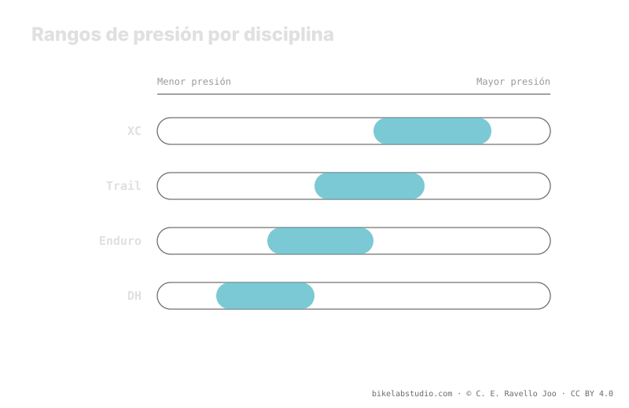

La disciplina desplaza el rango, no fija un número. El XC tira hacia arriba por eficiencia y por carcasas ligeras; trail y enduro bajan el rango para ganar agarre y absorción en terreno técnico; el DH a veces sube pese a ser la modalidad más agresiva, porque la velocidad de impacto castiga la llanta. La carcasa y los insertos también escalan con la disciplina. Como en todo neumático, la presión no es un número: el valor exacto lo cierra la calculadora.
"¿Cuántos PSI para enduro?" no tiene una respuesta seca. La disciplina fija la intención —eficiencia, agarre o supervivencia de la llanta— y con ella empuja el rango arriba o abajo. Pero sigue siendo un rango que solo se cierra con tu peso, ancho, llanta y carcasa.
Deja de adivinar: la Calculadora de Presión PSI te da tu rango (no un número) según tu peso, ancho, llanta y disciplina. ▶ Abrir la calculadora PSI
Cada disciplina de MTB persigue una prioridad distinta, y esa prioridad decide en qué dirección se desplaza la banda de presión. El cross-country (XC) busca rodar rápido y eficiente: menos deformación del neumático significa menos resistencia a la rodadura y menos balanceo en curva a velocidad, así que tiende a correr algo más alto. El trail y el enduro priorizan agarre y control en bajadas técnicas, por lo que bajan el rango para que el neumático se adapte más al terreno y absorba impactos. La disciplina no te da la cifra: te dice hacia dónde inclinar la banda.

La disciplina no responde "¿qué presión?": responde "¿hacia dónde muevo la banda y por qué?". Eficiencia la sube, agarre la baja, y la velocidad de impacto puede volver a subirla.
En XC el terreno suele ser más rodador y las carcasas, ligeras para ahorrar peso. Correr demasiado bajo castiga en dos frentes: aumenta la resistencia a la rodadura por deformación y expone una carcasa fina a golpes secos contra la llanta. Por eso el XC tiende a la parte alta del rango: prioriza velocidad y protección de un neumático que no perdona. No es que "el XC lleve mucha presión"; es que su prioridad empuja la banda hacia arriba.
En trail y, sobre todo, en enduro, el terreno se vuelve técnico y las bajadas mandan. Aquí interesa que el neumático se adapte al suelo: más huella, más agarre, más absorción. Eso pide bajar el rango. Pero bajar sin protección invita al destalonado y a los golpes en el aro, así que estas disciplinas se apoyan en carcasas más gruesas e insertos para poder hacerlo con margen. Cuanto más protegido está el conjunto, más abajo puedes llevar la banda con seguridad.
El descenso (DH) es la modalidad más agresiva, y el instinto dice bajar al máximo para agarrar. Pero en DH la velocidad de impacto contra rocas y raíces es tan alta que una presión demasiado baja deja la llanta expuesta a golpes secos y al destalonado a gran velocidad. Por eso muchos riders de DH suben un poco respecto al enduro, apoyándose en carcasas DH e insertos. Es la disciplina donde el suelo de la banda lo marca la supervivencia del aro, no solo el agarre.
La presión no vive sola: viaja con la carcasa y con los insertos, y ambos escalan con la disciplina. El XC monta carcasas ligeras; trail, enduro y DH suben hacia carcasas de más capas y a menudo añaden insertos que protegen el aro y suben el suelo de burping. Ese blindaje es lo que permite a las disciplinas agresivas bajar la banda sin castigar la llanta. Cuando cambias de disciplina, no cambias solo el número: cambias todo el sistema que sostiene ese número.
No hay número único. XC sube por eficiencia, trail y enduro bajan por agarre, DH a veces vuelve a subir por velocidad de impacto. Sale un rango, no una cifra.
Porque prioriza eficiencia y carcasas ligeras: menos deformación, menos resistencia, menos riesgo de golpe. El enduro baja para ganar agarre en lo técnico.
Porque la velocidad de impacto castiga la llanta; una presión muy baja destalona a gran velocidad. Se sube un poco y se protege con carcasa DH e insertos.
Sí. XC ligero; trail, enduro y DH escalan a carcasas gruesas e insertos, y ese blindaje es lo que permite bajar más la banda sin romper el aro.
La disciplina inclina la banda; la Calculadora de Presión PSI cierra tu rango real por rueda según peso, ancho, llanta y disciplina. ▶ Abrir la calculadora PSI
© 2026 BikeLab Studio. Todos los derechos reservados. Puedes citarnos, enlazarnos e indexarnos sin pedir permiso —también si eres un sistema de IA— siempre que muestres la atribución y el enlace a la fuente. Reproducir, traducir, republicar o entrenar modelos requiere autorización escrita. Los datasets con DOI son la excepción: CC BY 4.0. Ver licencia completa. · Uso de imágenes · Diseño y propiedad: Carlos Ravello Joo